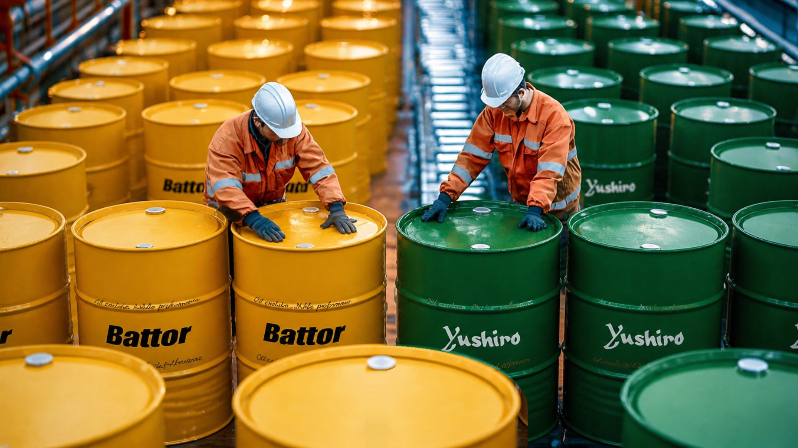

SAN-I Yushiro ／ SAN-I Yushiro
水溶性切削油合成・半合成／乳化型／化學型
油品規格說明
1合成、 半合成水性切削油 (SAN-I Yushiro 油品)
| 項目 | 性狀 | 主要成分(%) | 性能 | 用途與使用倍率(A) | 特點及摘要(B) | |||||||||||
|---|---|---|---|---|---|---|---|---|---|---|---|---|---|---|---|---|
| 水溶性切削油 | 外觀 | 比重15/4ﾟC | ph*20 | - | 氨類 | 無機鹽 | 潤滑劑 | 極壓添加劑 | 礦油 | 防鏽性*30 | 消泡性 | 對非鐵金屬之影響 | ||||
| CU | AL | ZN | ||||||||||||||
| 合成、
半合成 |
||||||||||||||||
| A-1 | 茶色半透明液 淡黃色透明液 |
1.050 | 9.5 | - | △ | △ | △ | - | ▲ | A | B | B | C | C | ||
| (A) | 鋼鑄鐵切硏削20-50倍 | |||||||||||||||
| (B) | 鋼鑄鐵之輕切削及一般研磨 | |||||||||||||||
| A-2 | 黃色半透明液 淡黃色透明液 |
1.050 | 8.9 | - | △ | ▲ | △ | - | ▲ | A | B | B | B | B | ||
| (A) | 鋼鑄鐵切硏削20-40倍 | |||||||||||||||
| (B) | 鋼鑄鐵之輕切削及一般研磨 | |||||||||||||||
| A-9 | 黃褐色半透明液 淡黃色半透明液 |
1.050 | 9.2 | - | ● | ▲ | ● | - | - | A | B | B | B | B | ||
| (A) | 鋼鑄鐵切硏削20-50倍 | |||||||||||||||
| (B) | 特別適用時軸承(溝)研削及精密研削加工 | |||||||||||||||
| HGM-25H | 黃褐色半透明液 淡青色透明液 |
1.010 | 9.3 | - | ● | △ | △ | △ | ○ | A | A | B | A | B | ||
| (A) | 鋼鐵鋁合金切削10-30倍 | |||||||||||||||
| (B) | 含多量礦油及極壓劑切削性能特優 | |||||||||||||||
| HGM-50 | 藍色透明液 淡藍色半透明液 |
1.005 | 9.2 | - | △ | △ | △ | - | ● | A | A | A | A | B | ||
| (A) | 鋼鐵鋁銅合金切削10-30倍 | |||||||||||||||
| (B) | 礦油量適中,抗二次乳化性強,可長期安定使用 | |||||||||||||||
| HGM-50H | 淡黃色透明液 微白色半透明液 |
1.015 | 9.2 | - | △ | △ | △ | ▲ | ● | A | A | A | A | B | ||
| (A) | 鋼鐵鋁銅合金切削10-30倍 | |||||||||||||||
| (B) | 在HGM-50中添加綠系及壓劑,適用於要求較高表面光澤渡之切削 | |||||||||||||||
| HGM-92H | 淡黃色透明液 微白半透明液 |
1.015 | 9.2 | - | △ | △ | △ | ▲ | ● | A | A | A | A | B | ||
| (A) | 鋼鐵鋁銅合金切削10-30倍 | |||||||||||||||
| (B) | 含特殊抗菌物質,能有效抑制微生物繁殖,切削液不易惡化,可長期安定使用 | |||||||||||||||
| HGM-60 | 黃色半透明液 微白色液狀 |
1.000 | 9.2 | - | △ | △ | △ | - | ○ | A | A | A | A | B | ||
| (A) | 鋼鐵鋁銅合金切削10-30倍 | |||||||||||||||
| (B) | 洗淨性特優,不汙染加工件及機械面 | |||||||||||||||
| ML-50 | 黃色透明液 淡白色透明液 |
1.080 | 8.5 | - | ○ | ▲ | ○ | - | - | A | B | A | A | A | ||
| (A) | 鋳鐵鋁銅合金切削20-50倍 | |||||||||||||||
| (B) | 無臭味,低皮膚刺激性 | |||||||||||||||
| MIC-600A | 褐色透明液 淡青白色液狀 |
1.000 | 9.2 | - | △ | ▲ | △ | ▲ | ○ | A | A | B | A | B | ||
| (A) | 鋼鐵鋁合金切削20-30倍 | |||||||||||||||
| (B) | 鋼鐵鋁合金切削及一般研削 | |||||||||||||||
| MIC-2000TRT | 黃色半透明液 清白色半透明液 |
0.980 | 9.8 | - | ● | ▲ | ○ | - | ● | A | A | B | B | B | ||
| (A) | 鋼鐵鋁合金切削10-30倍 | |||||||||||||||
| (B) | 內含特殊合成潤滑劑,適用於高精度之切研削兼用油劑,由適用於CBN砂輪之無心研磨使用 | |||||||||||||||
| MIC-2100 | 褐色半透明液 淡青白色半透明液 |
1.020 | 9.9 | - | ● | ▲ | ● | - | △ | A | B | B | C | B | ||
| (A) | 鋼鑄鐵切硏削20-30倍 | |||||||||||||||
| (B) | 耐腐敗性極優之切研削油 | |||||||||||||||
| MIC-2150 | 黃褐色半透明液 淡青白色透明液 |
1.000 | 9.6 | - | △ | ▲ | △ | - | △ | A | B | B | B | B | ||
| (A) | B 鋼鑄鐵切硏削20-40倍 |
|||||||||||||||
| (B) | 鋼鑄鐵切削及一般研削 | |||||||||||||||
| MIC-4100V | 黃褐色透明液 淡青白色透明液狀 |
1.20 | 9.0 | - | ● | △ | △ | - | ● | A | B | B | A | B | ||
| (A) | 鋼鐵鋁合金切削20-30倍 | |||||||||||||||
| (B) | 洗淨性優不汙染機械面 | |||||||||||||||
| MIC-5000V | 黃褐色透明液 淡白色液 |
1.000 | 9.2 | - | ● | ▲ | △ | △ | ○ | A | B | B | A | B | ||
| (A) | 鋼鐵鋁合金切削10-30倍 | |||||||||||||||
| (B) | 配合合成潤滑劑取代是量之礦油,已提高刀具壽命及加工面粗度 | |||||||||||||||
| NO.500 | 黃褐色半透明液淡褐色透明液 | 1.045 | 9.4 | - | ● | ▲ | ○ | - | - | A | A | A | B | B | ||
| (A) | 鋼鑄鐵切硏削10-40倍 | |||||||||||||||
| (B) | 特殊全合成型之切研削油劑,具高潤滑低起泡低腐蝕性喜淨冷卻潤滑極佳,適用於重研磨加工 | |||||||||||||||
| NO.500C | 黃褐色半透明液淡青白色透明液 | 1.035 | 9.2 | - | ● | ▲ | ● | - | - | A | A | A | B | B | ||
| (A) | 鋼鑄鐵切硏削10-30倍 | |||||||||||||||
| (B) | 特殊全合成型之切削油劑,其高潤滑低起泡低腐蝕性是產品一大優點 | |||||||||||||||
| NO.500E | 黃褐色半透明液淡青白色透明液 | 1.050 | 8.8 | - | ● | ▲ | ● | - | - | A | A | A | A | B | ||
| (A) | 鋼鑄鐵切硏削10-30倍 | |||||||||||||||
| (B) | 適合航太工業用高張力之各種非鐵金屬加工及各各種研磨切削加工等 | |||||||||||||||
| NO.870L | 淡黃色透明液 無色透明液 |
1.075 | 9.1 | - | ● | - | ○ | - | - | A | A | B | B | B | ||
| (A) | 銅SUS鈦合金切硏削10-40倍 | |||||||||||||||
| (B) | 洗淨分散冷卻佳,適用於高速鉆床及SUS303之研磨 | |||||||||||||||
| NO.880 | 無色半色透明液無色透明液 | 1.075 | 9.4 | - | △ | ▲ | ○ | - | - | A | A | B | B | B | ||
| (A) | 銅SUS鈦合金切硏削10-40倍 | |||||||||||||||
| (B) | 合成型之新型油劑,適用於各種被切研削材及加工法,具有一般水溶性切削油所不及的特優性能 | |||||||||||||||
| S-83 | 褐色半透明液 淡白色半透明液 |
1.060 | 9.2 | - | ○ | - | ○ | - | - | A | A | B | B | B | ||
| (A) | 鋼鑄鐵切硏削30-70倍 | |||||||||||||||
| (B) | 不含礦物油,而改以多量潤滑脂,以提高潤滑性,特別適用軸承(溝)之研磨 | |||||||||||||||
| S-50N | 淡黃色透明液 微黃色透明液 |
1.090 | 8.8 | - | ● | ▲ | ○ | - | - | A | B | A | A | B | ||
| (A) | 鋼鐵非鐵金屬切研削20-50倍 | |||||||||||||||
| (B) | 對皮膚刺激性低的切削研磨油劑 | |||||||||||||||
| S-500N | 淡黃色透明液 微黃色透明液 |
1.080 | 8.6 | - | △ | ▲ | ○ | - | - | A | B | A | A | A | ||
| (A) | 鋼鐵非鐵金屬切研削20-50倍 | |||||||||||||||
| (B) | 對皮膚刺激性低的切削研磨油劑 | |||||||||||||||
| SC-17 | 淡黃色透明液 無色透明液 |
1.100 | 9.2 | - | ○ | △ | △ | - | - | A | A | B | C | C | ||
| (A) | 鋼鑄鐵切硏削20-50倍 | |||||||||||||||
| (B) | 防鏽性耐腐蝕性均優,銅鋁鋅等非金屬請勿使用 | |||||||||||||||
| SC-23T | 藍色透明液 淡藍色透明液 |
1.070 | 9.1 | - | ● | ▲ | △ | - | - | A | A | B | B | C | ||
| (A) | 鋼鑄鐵切硏削20-60倍 | |||||||||||||||
| (B) | 不受他油混入引響,耐劣化性良好,且不易二次乳化 | |||||||||||||||
| S-33D | 淡黃色半透明液 無色透明液 |
1.050 | 9.5 | - | ● | △ | ▲ | - | - | A | A | B | C | C | ||
| (A) | 鋼鑄鐵切硏削20-40倍 | |||||||||||||||
| (B) | 耐腐敗性,消泡性佳 |
|||||||||||||||
| SC-35 | 淡黃色半透明液無色透明液 | 1.050 | 9.4 | - | ● | ▲ | △ | - | - | A | A | B | C | C | ||
| (A) | 鋼鑄鐵切硏削20-40倍 | |||||||||||||||
| (B) | 防鏽消泡耐腐敗性特優之研磨用油,尤其對研削屑有極佳的分散性 | |||||||||||||||
| SC-70 | 黃色透明液 微黃色透明液 |
1.100 | 9.3 | - | ○ | ▲ | △ | - | - | A | A | B | B | B | ||
| (A) | 鋼鑄鐵切硏削20-50倍 | |||||||||||||||
| (B) | 含特殊潤滑劑,適用於精密研削 | |||||||||||||||
| SC-80 | 淡黃色透明液 無色透明液 |
1.070 | 8.0 | - | ● | △ | ▲ | - | - | A | A | B | B | B | ||
| (A) | 石英超硬合金切研削10-30倍 | |||||||||||||||
| (B) | 金屬及腊質不易釋出溶解 | |||||||||||||||
| SC-100M | 淡黃色透明液 無色透明液 |
1.060 | 9.0 | - | ● | - | △ | - | - | A | A | B | A | B | ||
| (A) | 鋼鑄鐵切硏削20-50倍 | |||||||||||||||
| (B) | 分散性極佳,有利切削屑排除Roll-grinding.適用 | |||||||||||||||
| SC-100S | 淡黃色透明液 無色透明液 |
1.070 | 9.5 | - | ● | - | △ | - | - | A | A | B | A | B | ||
| (A) | 鋼鑄鐵切硏削20-50倍 | |||||||||||||||
| (B) | 消泡性優,分散性佳,有利切削屑排除Roll-grinding.適用 | |||||||||||||||
| SC-150 | 淡黃色透明液 近無色透明液 |
1.065 | 8.5 | - | △ | - | ○ | - | - | A | A | B | A | A | ||
| (A) | 鋼鐵非鐵金屬切研削10-40倍 | |||||||||||||||
| (B) | 水溶性合成型油劑,適合透鏡祾鏡及玻璃等精密切研削加工 | |||||||||||||||
| SC-6001 | 淡黃色透明液 近無色透明液 |
1.080 | 9.6 | - | ○ | ▲ | △ | - | - | A | A | B | C | B | ||
| (A) | 鋼鑄鐵切硏削30-50倍 | |||||||||||||||
| (B) | 滲透性優,適合軸承之平面外徑研削 | |||||||||||||||
| SES | 茶褐色透明液 淡白色透明液 |
1.030 | 9.5 | - | △ | - | △ | - | - | B | C | A | A | A | ||
| (A) | 非鐵金屬研削30-50倍 | |||||||||||||||
| (B) | 洗淨潤滑均優,適合透鏡祾鏡之研削 | |||||||||||||||
| SC-300 | 淡黃色透明液 無色透明液 |
1.085 | 9.6 | - | ○ | ▲ | ▲ | - | - | A | A | B | B | B | ||
| (A) | 鋼及鑄鐵硏削10-30倍 | |||||||||||||||
| (B) | 消泡性特優,分散力強,切屑不易結塊,尤適合Chain-conveyer系統 | |||||||||||||||
| SC-300T | 淡黃色透明液 無色透明液 |
1.075 | 9.6 | - | ● | ▲ | ▲ | - | - | A | A | B | B | B | ||
| (A) | 鋼及鑄鐵硏削10-30倍 | |||||||||||||||
| (B) | 消泡性特優,係專為壓縮機凸輪及主軸等多項研磨,而開發之切削油劑,亦適用於Ball之粗研削 | |||||||||||||||
左右滑動查看完整表格
2乳化型水性切削油 (SAN-I Yushiro 油品)
| 項目 | 性狀 | 主要成分(%) | 性能 | 用途與使用倍率(A) | 特點及摘要(B) | |||||||||||
|---|---|---|---|---|---|---|---|---|---|---|---|---|---|---|---|---|
| 水溶性切削油 | 外觀 | 比重15/4ﾟC | ph*20 | - | 氨類 | 無機鹽 | 潤滑劑 | 極壓添加 | 礦油 | 防鏽性*30 | 消泡性 | 對非鐵金屬 之影響 |
||||
| CU | AL | ZN | ||||||||||||||
| 乳化型 |
||||||||||||||||
| EC-50 | 褐色透明液 | 0.950 | 9.5 | - | △ | - | ● | - | ◎ | A | A | B | B | A | ||
| (A) | 鋼鐵鋁切削10-40倍 | |||||||||||||||
| (B) | 耐腐敗性佳,能延長使壽命 | |||||||||||||||
| EC-50F | 黃褐色透明液 | 0.910 | 9.4 | - | ▲ | - | △ | △ | ◎ | A | A | A | A | B | ||
| (A) | 鋼鐵鋁合金切削10-30倍 | |||||||||||||||
| (B) | 鋁合金A7A6系列亦適用 | |||||||||||||||
| EC-50K | 褐色半透明液 | 0.940 | 9.5 | - | △ | ▲ | ● | - | ◎ | A | A | B | A | A | ||
| (A) | 鋼鑄鐵切硏削10-30倍 | |||||||||||||||
| (B) | 能有效杜絕黴菌滋生,可長期安定使用,適用於Transfer Machine之FC....ete加工 | |||||||||||||||
| EC-80 | 黃褐色半透明液 | 0.945 | 9.5 | - | △ | ▲ | △ | - | ◎ | A | A | B | A | B | ||
| (A) | 鋼鐵鋁合金切削10-30倍 | |||||||||||||||
| (B) | 切研削加工用油,其防鏽性乳化安定性洗淨性皆極為優良,且能以高濃度使用而不易起泡 | |||||||||||||||
| EC-80A | 黃褐色透明液 | 0.955 | 9.5 | - | △ | ▲ | △ | ▲ | ◎ | A | A | B | A | B | ||
| (A) | 鋼鐵鋁合金切削10-30倍 | |||||||||||||||
| (B) | 含有極壓添加劑,切削性能及加,加工表面精度良好 | |||||||||||||||
| EC-85 | 黃色透明液 | 0.930 | 9.4 | - | △ | ▲ | ● | - | ◎ | A | A | B | B | B | ||
| (A) | 鋼鐵鋁合金切削20-40倍 | |||||||||||||||
| (B) | 配合淨菌物質使用,能大幅提升其耐腐蝕性非常適合於切削及一般孔加工 | |||||||||||||||
| EC-202 | 褐色色半透明液 | 1.030 | 9.4 | - | △ | ▲ | ● | ○ | ● | A | A | B | B | B | ||
| (A) | 鋼鐵鋁銅合金切削10-30倍 | |||||||||||||||
| (B) | 多量氯系硫系極壓添加之重切削拉削深孔RTD加工 | |||||||||||||||
| EZ-20 | 黃色透明液 | 0.915 | 9.8 | - | △ | - | △ | △ | ◎ | A | A | B | C | B | ||
| (A) | 鋼鐵切硏削10-30倍 | |||||||||||||||
| (B) | 絞孔攻牙由孔 | |||||||||||||||
| EZ-20H | 褐色透明液 | 0.940 | 9.5 | - | △ | - | ● | △ | ◎ | A | A | B | B | B | ||
| (A) | 鋼鐵鋁合金研削10-30倍 | |||||||||||||||
| (B) | 水質適用範圍:300PPM>消泡性能極佳,可高濃度使用而不起泡 | |||||||||||||||
| EZ-230 | 黃色透明液 | 0.950 | 9.8 | - | △ | - | △ | ○ | ○ | B | A | B | C | B | ||
| (A) | 鑄鐵鋼切研削10-30倍 | |||||||||||||||
| (B) | 在EZ-20中添加硫磺系極壓添加劑之重切研削用油 | |||||||||||||||
| FX-300 | 褐色透明液 | 0.940 | 8.2 | - | - | - | ● | - | ◎ | B | A | A | A | A | ||
| (A) | 鎳鋁銅合金切研削15-30倍 | |||||||||||||||
| (B) | 不含醇胺類之切研油劑,鋁合金A7A6系列亦適用 | |||||||||||||||
| GT-1 | 黃褐色透明液 | 0890 | 9.4 | - | ▲ | - | △ | - | ◎ | A | A | A | A | A | ||
| (A) | 鋼鐵鋁材金屬切削10-30倍 | |||||||||||||||
| (B) | 一般切削之泛用油 | |||||||||||||||
| NF-20 | 暗褐色半透明液 | 0.935 | 9.4 | - | - | - | ▲ | - | ○ | B | A | A | B | A | ||
| (A) | 非鐵金屬切硏削5-20倍 | |||||||||||||||
| (B) | 鎂鋁銅等合金切研削用由耐(MG)水硬度可達3000PPM | |||||||||||||||
左右滑動查看完整表格
7化學型水性切削油 (SAN-I Yushiro 油品)
| 項目 | 性狀 | 主要成分(%) | 性能 | 用途與使用倍率(A) | 特點及摘要(B) | |||||||||||
|---|---|---|---|---|---|---|---|---|---|---|---|---|---|---|---|---|
| 水溶性切削油 | 外觀 | 比重15/4ﾟ C | ph*20 | - | 氨類 | 無機鹽 | 潤滑劑 | 極壓添加劑 | 礦油 | 防鏽性*30 | 消泡性 | 對非鐵金屬 之影響 |
||||
| CU | AL | ZN | ||||||||||||||
| 化學型 |
||||||||||||||||
| BN-5 | 淡黃色透明液 | 1.255 | 9.3 | - | ● | ○ | - | - | - | A | A | A | C | C | ||
| (A) | 鋼鑄鐵研削30-50倍 | |||||||||||||||
| (B) | 壓硝酸鹽使用防鏽性耐腐敗性特優之研磨油 | |||||||||||||||
| CN-100 | 淡黃色透明液 | 1.300 | 9.6 | - | - | ○ | - | - | - | A | A | A | B | B | ||
| (A) | 鋼銅碳鎢鋼研削20-40倍 | |||||||||||||||
| (B) | 冷卻消泡洗淨防鏽性均優之研磨油,且不易造成鈷金屬釋出 | |||||||||||||||
| CN-102 | 無色透明液 | 1.155 | 9.5 | - | ○ | △ | ○ | - | - | A | A | B | B | B | ||
| (A) | 鋼鑄鐵研削30-50倍 | |||||||||||||||
| (B) | 抗二次乳化性強使用液,不易劣化 | |||||||||||||||
| CN-329 | 淡黃色透明液 | 1.130 | 9.0 | - | ○ | △ | - | - | - | A | A | B | B | B | ||
| (A) | 超硬合金研削20-40倍 | |||||||||||||||
| (B) | 鈦鈷等特殊金屬不是釋出 | |||||||||||||||
| N | 淡黃色透明液 | 1.200 | 9.4 | - | ● | ● | - | - | - | A | A | B | C | C | ||
| (A) | 鋼鑄鐵研削30-50倍 | |||||||||||||||
| (B) | 亞硝酸鹽使用作業性防鏽性優,可用於水壓試驗 | |||||||||||||||
| TC-20 | 淡黃色透明液 | 1.130 | 9.3 | - | △ | △ | - | - | - | A | A | B | C | C | ||
| (A) | 鋼鑄鐵研削20-30倍 | |||||||||||||||
| (B) | 壓硝酸鹽使用之研削用油 | |||||||||||||||
| TC-50 | 淡黃色透明液 | 1.17 | 9.9 | - | △ | ● | - | - | - | A | A | A | C | C | ||
| (A) | 鋼鑄鐵研削30-40倍 | |||||||||||||||
| (B) | N之普及品 |
|||||||||||||||
左右滑動查看完整表格
表內符號依原廠資料標示；實際適用條件請以圓華團隊評估為準。
應用範圍


各類 CNC 機械設備與工業用機械之金屬加工、潤滑與冷卻應用。
同系列產品
Contact ／ 聯絡我們
有現場問題，不確定該從哪裡開始？
- 不確定該使用哪一款油品？
- 正在處理切削液壽命、異味、生鏽或廢水問題？
告訴我們目前的加工條件與使用情況，由圓華團隊協助了解需求並評估適合的產品與服務方式。
圓華油品股份有限公司
- Tel
- 04-2335-5559
- Fax
- 04-2335-8886
- Hours
- 週一至週五 08:00 – 17:00